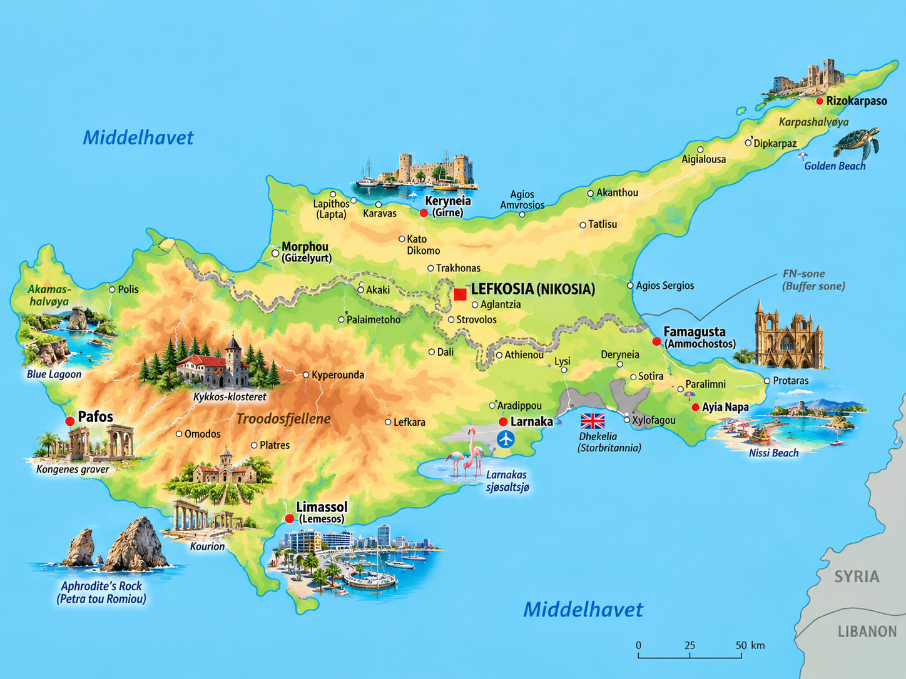
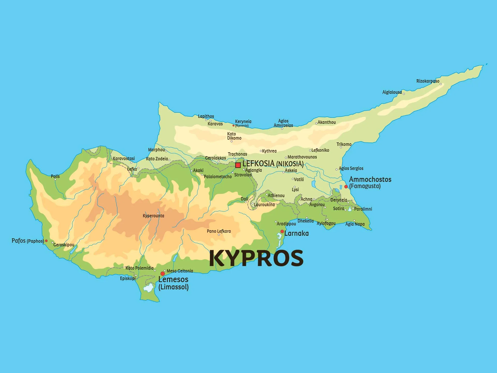

⚡ Korte fakta om Kypros
🗺️ Kart over Kypros
Klikk på et av kartene for å åpne og zoome i fullskjerm!


1. Natur og klima
Kypros er den tredje største øya i Middelhavet. Øya er kjent for krystallklart vann, dramatiske fjell og over 300 soldager i året!
Mount Olympus i Troodos-fjellene rager hele 1 952 meter over havet, og her kan man stå på ski om vinteren!
Kypros har noen av Europas reneste badevann, med kjente strender som Nissi Beach og Fig Tree Bay.
Somrene er varme og tørre, mens vintrene er milde. Sjøtemperaturen er blant de varmeste i hele Middelhavet!
Høyeste fjell
- Laster...
Lengste elver
- Laster...
Største innsjøer
- Laster...
Dyreliv: På sandstrendene legger sjeldne havskilpadder (uekte karetteskadd og suppeskilpadde) egg. I fjellene bor det ville mufflonsauer!
2. Folk og samfunn
På Kypros bor det ca. 1,2 millioner mennesker. Øya har en rik og sammensatt kultur formet av beliggenheten mellom Europa, Asia og Afrika.
🏢 Største byer på Kypros
- 🔹 Nikosia: Hovedstaden som er delt i en gresk-kypriotisk og tyrkisk-kypriotisk del.
- 🔹 Limassol: Stor kystby kjent for sin havn, strandpromenade og festivaler.
- 🔹 Andre viktige byer: Larnaka (med den største flyplassen) og Pafos.
🫓 Matkultur & Meze
Maten på Kypros er fantastisk! Den mest kjente ostespesialiteten er Halloumi – en grillost som lages av geit- og saue-melk.
Når cypriotene spiser ute, bestiller de ofte Meze – mange småretter som deles rundt bordet med familie og venner.
🗣️ Språk og deling av øya
Det snakkes i hovedsak gresk i sør og tyrkisk i nord. Veldig mange snakker også flytende engelsk siden Kypros har en fortid som britisk koloni.
3. Stat og politikk
Republikken Kypros er en demokratisk republikk der presidenten fungerer som både statsoverhode og leder for regjeringen.
Laster...
Kypros' president og regjeringssjef.

EU-medlem
Kypros har vært medlem av Den europeiske union siden 2004.
Vouli ton Antiprosopon
Det kypriotiske parlamentet i Nikosia.
📍 Republikken Kypros er administrativt delt inn i 6 distrikter (Nikosia, Limassol, Larnaka, Pafos, Famagusta og Keryneia).
4. Kypros' historie
🏛️ Antikken og mytologi (ca. 1100 f.Kr.)
Greske nybyggere slo seg ned på øya. I gresk mytologi ble kjærlighetsgudinnen Afrodite født av havet ved Pafos på Kypros!
⚔️ Kobberalderen og stormakter
Kypros var berømt for sine rike kobbergruver (ordet kobber kommer faktisk fra Kypros!). Romerne, bysantinerne og osmanerne har alle styrt øya.
 Britisk koloni og uavhengighet (1960)
Britisk koloni og uavhengighet (1960)
Etter mange år under britisk styre ble Kypros en helt selvstendig republikk i 1960.
🕊️ Delingen av øya (1974)
Etter uroligheter invaderte Tyrkia den nordlige delen av øya. Siden 1974 har FN voktet «den grønne linjen» som deler øya i to.
Medlem av EU (2004)
Kypros ble offisielt medlem av Den europeiske union, og innførte valutaen Euro i 2008.
5. Økonomi og næringsliv
Hva lever de av på Kypros? Turisme, sjøfart, landbruk og matvarer er blant øyas viktigste inntektskilder!
Turisme
Millioner av turister besøker øya hvert år for sol og strand.
Halloumi
Den berømte osten eksporteres til matbutikker over hele verden.
Sitrongårder
Dyrker mengder av appelsiner, sitroner, oliven og druer.
Skip og handel
Kypros har en av EU sine største flåter innen skipsfart.
6. Kultur og underholdning
🏫 Skole og sport
Skolegangen er obligatorisk fra barna er 5–6 år til de fyller 15. Kypros har også flere store universiteter.
⚽ Populære sporter på Kypros:
Fotball, basketball, rally og vannsport!
🌟 Kjente kyprioter & figurer
- 🌊 Afrodite: Den antikkes gudinne for skjønnhet og kjærlighet.
- 🎾 Marcos Baghdatis: Berømt tennisspiller som nådde finalen i Australian Open.
- 🏃 Kyriakos Ioannou: Verdensberømt friidrettsutøver i høydehopp.
- 🎵 Anna Vissi: En av de mest populære artistene i den gresktalende verden.
🧠 Test deg selv: Kypros-Quiz!
Spørsmål laster...